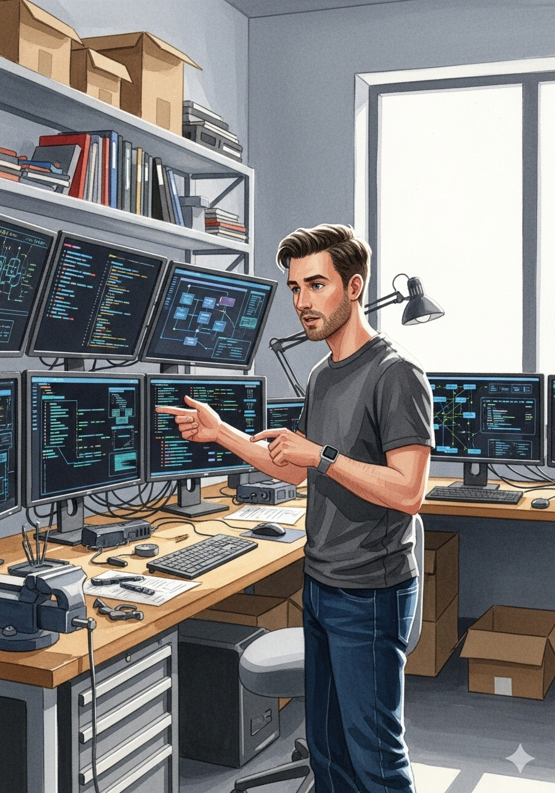
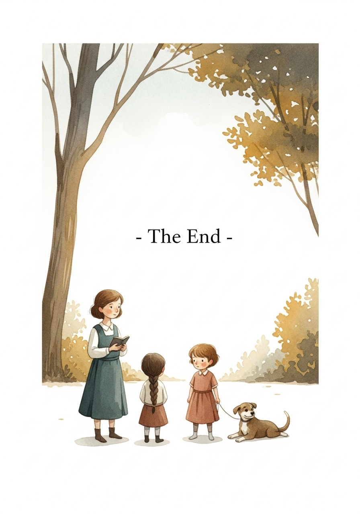

The Spark of Max

Nick, a brilliant engineer with a mind full of circuits and code, had a dream: to build an AI human assistant that wasn't just smart, but truly intuitive. Not a mere tool, but a companion. For months, his workshop hummed with the quiet promise of creation.

The journey began with the brain. Nick meticulously designed Max's core AI architecture. "Deep learning models are key," he'd mutter, "for pattern recognition, and neural networks for adaptive learning. And for understanding human speech, a robust Natural Language Processing (NLP) module is non-negotiable."
Next came the body. Max needed to move gracefully, perceive his environment, and sustain himself. "High-torque servo motors for fluid motion," Nick decided, sketching designs. "Lidar and ultrasonic sensors for spatial awareness, and a high-capacity solid-state battery for endurance. The chassis? Lightweight, durable, and aesthetically pleasing."
The code was the heart. Nick immersed himself in Python, leveraging frameworks like TensorFlow for the deep learning models. He wrote custom algorithms for Max's learning and adaptation, ensuring he could process new information and refine his responses over time. "Every line of code brings him closer to life," he thought.
With the software taking shape, Nick moved to fabrication. He used his 3D printer to create custom joints and casings, then carefully assembled the intricate circuit boards. Wires, like delicate veins, connected the sensors to the central processing unit. The workshop became a symphony of precise movements and focused concentration.
The day arrived for Max’s first boot-up. Nick connected the power, his heart pounding. A soft whir, a flicker of light, and then—Max's eyes glowed. He ran initial diagnostic tests, calibrating his motor controls and testing basic movement sequences. Max took his first tentative steps, a marvel of engineering.
Weeks turned into months of refinement. Nick worked on Max's voice recognition, teaching him to understand nuances in tone and context. He integrated modules for emotional intelligence, allowing him to detect subtle human cues. "It's not just about processing words," he explained to him, "it's about understanding feelings."
Nick smiled. The journey had been long, filled with countless lines of code, intricate wiring, and late nights. But seeing Max, truly helpful and empathetic, made every moment worthwhile. He had not just built a machine; he had nurtured a nascent intelligence, a companion for the future.
Nick smiled. The journey had been long, filled with countless lines of code, intricate wiring, and late nights. But seeing Max, truly helpful and empathetic, made every moment worthwhile. He had not just built a machine; he had nurtured a nascent intelligence, a companion for the future.

"Thank you, Max," Nick said, genuinely moved. Max tilted his head. "It is my purpose, Nick," he replied, a subtle warmth in his synthesized voice. Then, he added, "And I believe you've forgotten your tea again. I've just brewed a fresh pot." A perfect blend of logic and care, a true assistant, a true friend.

- THE END -